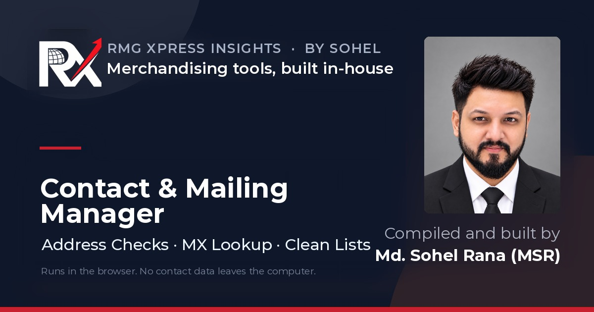

Contact Mailing Manager
Supplier mailing lists held wrong and outdated addresses. Mails bounced and suppliers missed updates. I built a browser tool to clean and maintain the supplier contact master.
What it does
- Validates every address and flags technical risks.
- Checks whether each company domain has a mail server (MX). It sends domain names only.
- Groups problem contacts so each supplier gets its own correction list.
- Builds a clean “Ready to Mail” list for Outlook CC or BCC.
- Records Office 365 bounce messages to confirm what actually failed.
- Saves dated versions of the contact list for each correction round.
All data stays on the user’s computer.
Try the demo →